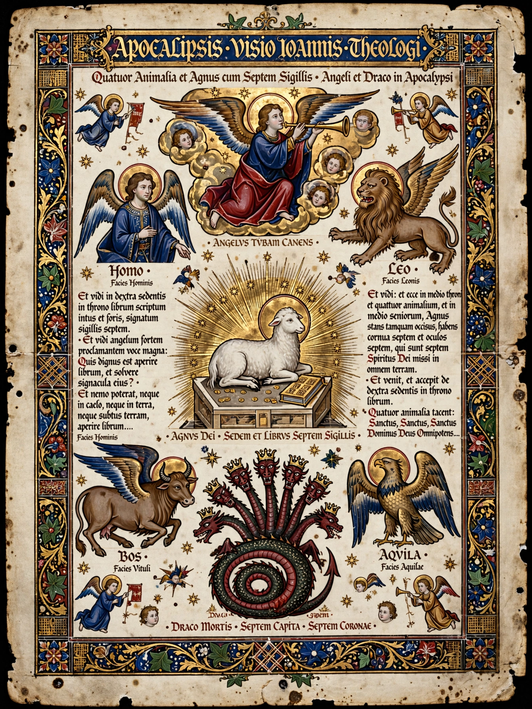

Apocalyptic literature is a genre of prophetical writing that developed in post-Exilic Jewish culture and continued among later Jews and Christians. The word "apocalypse" comes from the Greek apokalypsis, meaning "revelation" or "unveiling." Apocalyptic works disclose truths about the end of the present age and the coming of a future divine order, typically through visions mediated by an angel or other heavenly being to a human seer.

Scholars commonly note several features: pseudonymous attribution to an ancient hero (such as Enoch or Daniel); symbolic, often bizarre imagery (beasts, horns, numbers); periodized history presented as prophecy; dualism between the present evil age and the age to come; and the expectation of imminent divine intervention — the destruction of evil powers, judgment of the dead, and the establishment of God's kingdom. The literature often arose in communities under persecution, offering hope that suffering was temporary and meaningful.
The principal Jewish apocalypses include parts of the Book of Daniel (chapters 7–12), the Book of Enoch (1 Enoch), 2 Esdras, 2 Baruch, and the Apocalypse of Abraham. In the Dead Sea Scrolls, the War Scroll depicts an eschatological battle between the Sons of Light and the Sons of Darkness. The classic Christian example is the Book of Revelation, the final book of the New Testament, written in the late first century CE. Related material appears in the Synoptic Gospels' "little apocalypse" (Mark 13 and parallels) and in early Christian works such as the Shepherd of Hermas and the Apocalypse of Peter.
Apocalyptic ideas shaped Jewish and Christian eschatology, medieval millenarian movements, and later religious movements including Adventism and dispensationalism. The genre's imagery — the Four Horsemen, Armageddon, the Beast — remains a durable part of Western culture.